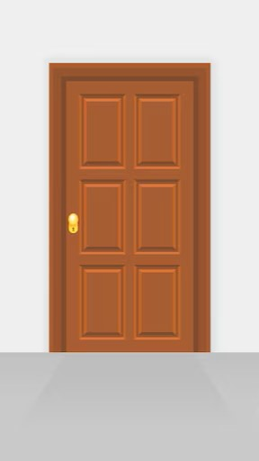

JavaScript puede cambiar contenido HTML.
En este caso cambia el atributo src (source) de una imagen
JavaScript cambia el estilo de un elemento HTML.
JavaScript puede ocultar elementos HTML.
JavaScript puede mostrar elementos HTML ocultos.
("myFunction está en un archivo externo")